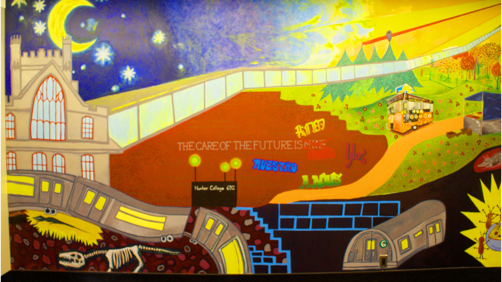

This image stood out to me because of the variety of colors, and from the moment I took the photo I knew I wanted to edit it to make the colors more vibrant. The photo was very dark initially, so I added a brightness/contrast layer to lighten the picture. I then got to enhancing the colors; I added a hue/saturation layer and upped the saturation. I noticed that this affected all of their colors and their vibrance, but especially the blues, which I liked. Still, after these two layers, I wanted to bring some more light into the image. So, I decided to experiment with a curves layer again, and this way I was able to bring more light to the center of the image.
